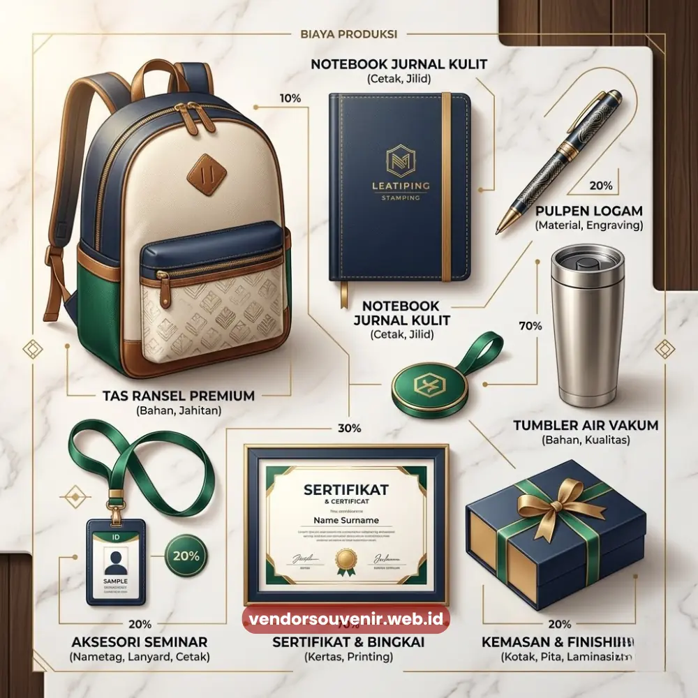
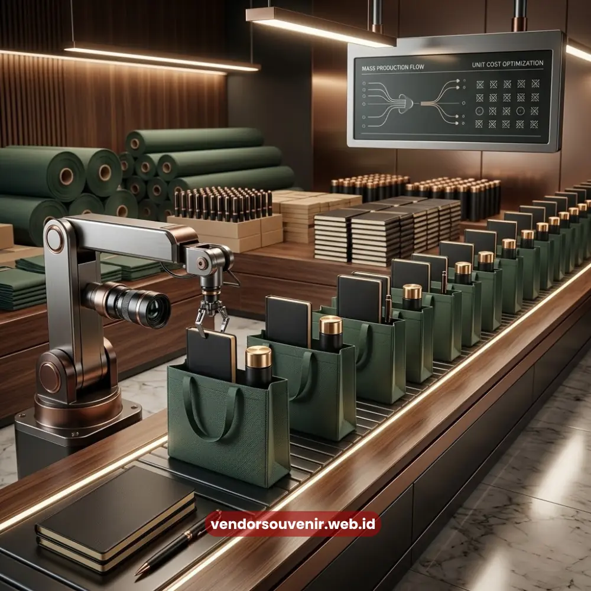

Daftar Isi
Estimasi biaya cetak seminar kit dipengaruhi oleh jenis bahan yang dipilih, jumlah unit pesanan, tingkat kerumitan desain, dan tenggat waktu produksi yang diminta panitia acara.
Memahami keempat faktor ini membantu panitia menyusun anggaran secara lebih realistis sejak tahap perencanaan awal, sehingga tidak terjadi selisih signifikan antara estimasi dan biaya aktual saat produksi berjalan.
Penyusunan anggaran seminar kit yang matang juga membantu panitia menentukan prioritas komponen mana yang perlu dialokasikan biaya lebih besar, dan komponen mana yang dapat menggunakan spesifikasi lebih standar tanpa mengurangi kesan profesional secara keseluruhan.
- Jenis bahan dan tingkat finishing menjadi variabel paling signifikan dalam struktur biaya seminar kit.
- Jumlah unit pesanan memengaruhi biaya per unit, di mana pemesanan lebih besar cenderung lebih efisien.
- Kerumitan desain, seperti jumlah warna sablon, turut memengaruhi total biaya produksi.
- Tenggat waktu produksi yang mendesak berpotensi menambah biaya akibat prioritas jadwal produksi.
- Perencanaan anggaran sejak awal membantu menghindari kompromi kualitas akibat keterbatasan waktu.
Apa Saja Komponen Biaya dalam Produksi Seminar Kit?
Komponen biaya dalam produksi seminar kit terdiri dari biaya bahan baku, biaya cetak atau sablon, biaya finishing tambahan, dan biaya operasional produksi seperti jahit atau perakitan komponen.
Biaya bahan baku menjadi komponen dasar yang porsinya paling besar, mengingat jenis kanvas, spunbond, atau kertas yang dipilih memiliki rentang harga yang cukup bervariasi di pasaran.
Biaya cetak atau sablon dipengaruhi oleh jumlah warna dan luas area desain yang dicetak pada setiap komponen.
Semakin banyak warna dan semakin luas area cetak, umumnya semakin tinggi pula biaya produksi yang dibutuhkan.
Biaya finishing tambahan, seperti laminasi atau emboss, juga menyumbang porsi biaya tersendiri yang perlu diperhitungkan sejak tahap perencanaan anggaran.
Bagaimana Jumlah Pesanan Memengaruhi Harga per Unit?
Jumlah pesanan memengaruhi harga per unit karena biaya produksi seperti setting mesin cetak dan pembelian bahan baku dalam skala besar dapat dibagi ke lebih banyak unit, sehingga menurunkan biaya rata-rata per satuan produk.
Prinsip skala ekonomi ini berlaku hampir di seluruh industri percetakan, termasuk pada produksi seminar kit.
Sebagai gambaran umum, pemesanan dalam jumlah kecil cenderung memiliki biaya per unit lebih tinggi karena biaya setup produksi tetap harus dibagi ke jumlah unit yang lebih sedikit.
Sebaliknya, pemesanan dalam skala ratusan hingga ribuan unit umumnya memberikan ruang penyesuaian harga per unit yang lebih kompetitif, sehingga menguntungkan panitia acara berskala besar dari sisi efisiensi anggaran.

Faktor Desain dan Kualitas pada Biaya Cetak
Apakah Desain yang Rumit Membuat Biaya Cetak Semakin Mahal?
Desain yang rumit, terutama dengan banyak warna atau elemen gradasi, umumnya membuat biaya cetak semakin tinggi dibandingkan desain sederhana dengan satu atau dua warna dominan.
Teknik sablon konvensional biasanya menghitung biaya berdasarkan jumlah warna yang digunakan, karena setiap warna membutuhkan proses cetak terpisah.
Bagi panitia dengan anggaran terbatas, menyederhanakan desain tanpa mengurangi identitas visual acara dapat menjadi strategi efektif untuk menekan biaya produksi tanpa mengorbankan kesan profesional pada hasil akhir seminar kit.
Mengapa Tenggat Waktu Produksi Berpengaruh pada Biaya?
Tenggat waktu produksi berpengaruh pada biaya karena pesanan dengan waktu pengerjaan mendesak membutuhkan prioritas jadwal produksi, jam kerja tambahan, dan terkadang percepatan pengiriman bahan baku, yang seluruhnya menambah komponen biaya operasional.
Rush order pada dasarnya mengorbankan efisiensi waktu demi kecepatan, sehingga wajar apabila biaya yang dikenakan turut lebih tinggi dibandingkan produksi dengan waktu pengerjaan normal.
Sebagai gambaran umum berdasarkan pola industri percetakan pada periode 2023-2024, pemesanan yang dilakukan minimal dua hingga tiga minggu sebelum acara umumnya memberikan fleksibilitas harga dan jadwal produksi yang lebih baik dibandingkan pemesanan mendadak kurang dari satu minggu sebelum hari pelaksanaan.
Estimasi biaya cetak seminar kit sangat dipengaruhi oleh kombinasi bahan, jumlah pesanan, kerumitan desain, dan tenggat waktu produksi.
Perencanaan anggaran yang matang sejak awal memungkinkan panitia mengalokasikan biaya secara proporsional tanpa harus mengorbankan kualitas hasil akhir seminar kit.
Agar mendapatkan estimasi biaya yang akurat sesuai kebutuhan dan anggaran acara Anda, konsultasikan detail kebutuhan seminar kit Anda bersama tim Hampers Malang sekarang.
Kami siap membantu menyusun kombinasi bahan dan desain yang paling efisien sesuai anggaran yang Anda miliki.

Butuh Bantuan Menghitung Anggaran Seminar Kit Anda?
Tim ahli kami siap membantu Anda menyusun paket seminar eksklusif yang efisien dan
terjangkau.
Pilihan bahan dan desain akan disesuaikan dengan ketersediaan budget dan kebutuhan acara
Anda.
Dapatkan penawaran harga terbaik untuk pesanan massal.
FAQ Seputar Estimasi Biaya Seminar Kit
Apakah pemesanan dalam jumlah kecil tetap dapat harga bersaing?
Pemesanan dalam jumlah kecil tetap dapat dilayani, namun harga per unit umumnya lebih tinggi dibandingkan pemesanan dalam skala besar karena prinsip skala ekonomi produksi.
Berapa lama sebaiknya melakukan pemesanan sebelum acara berlangsung?
Sebaiknya pemesanan dilakukan minimal dua hingga tiga minggu sebelum acara agar mendapatkan fleksibilitas jadwal produksi dan harga yang lebih baik.
Apakah biaya rush order selalu lebih mahal?
Biaya rush order umumnya lebih mahal karena membutuhkan prioritas jadwal produksi dan jam kerja tambahan dibandingkan produksi dengan tenggat waktu normal.
Maroon Souvenir
Partner Corporate Gift terpercaya di Indonesia. Berpengalaman melayani ratusan perusahaan sejak 2018.
Lihat Portofolio Kami